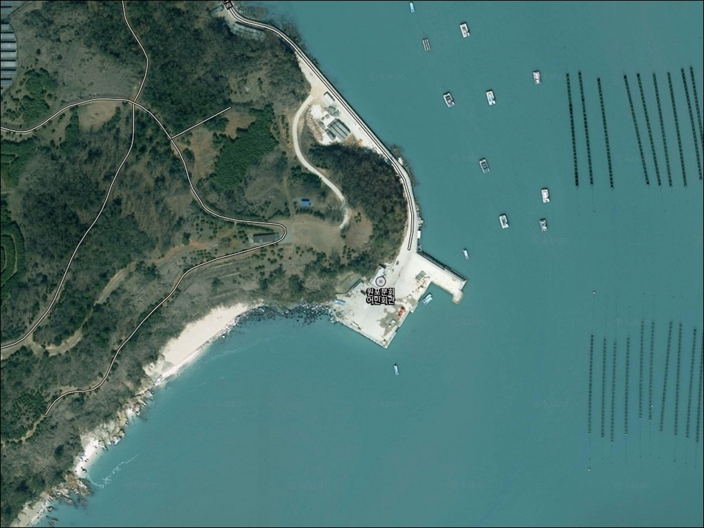
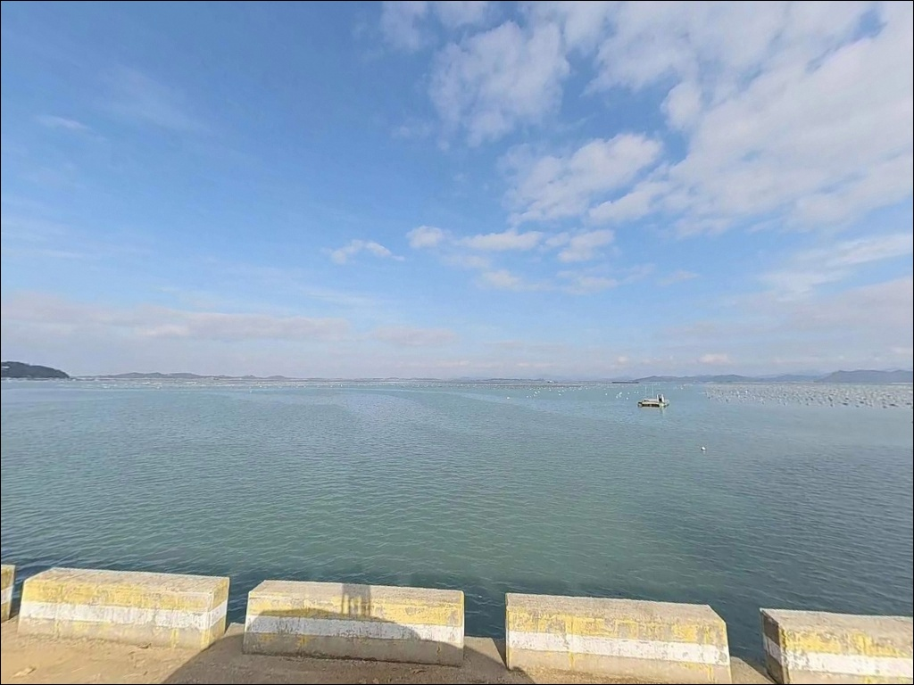
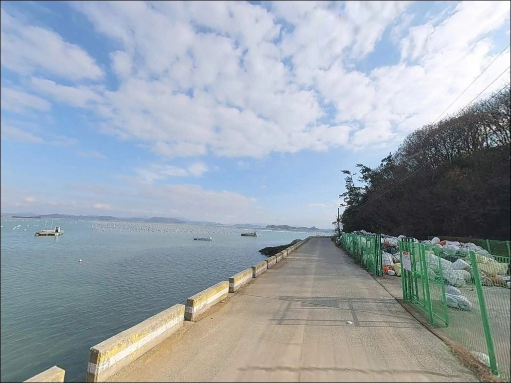
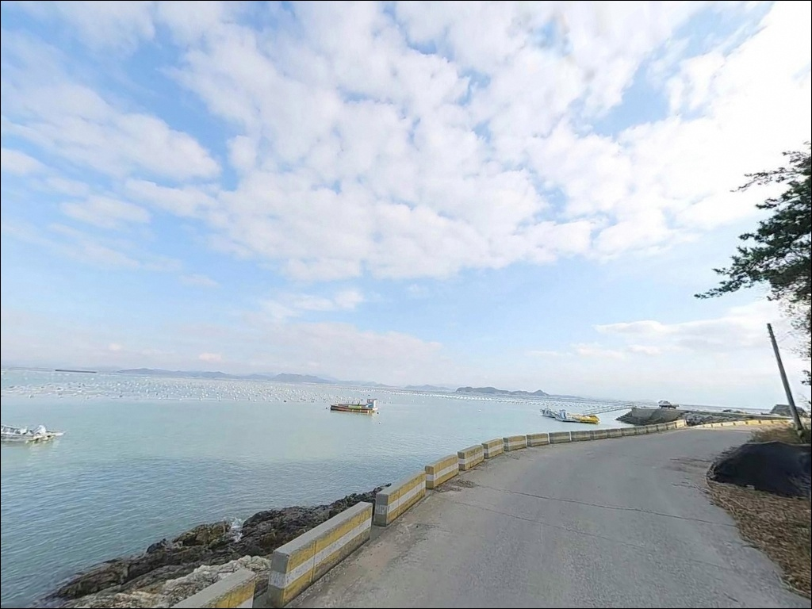
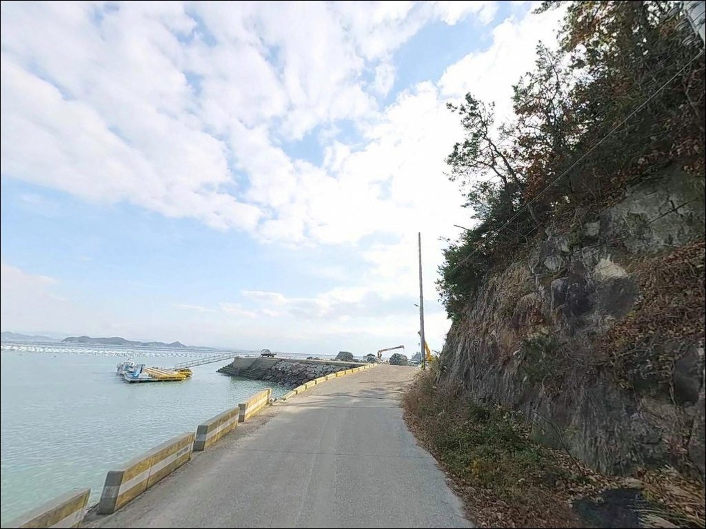
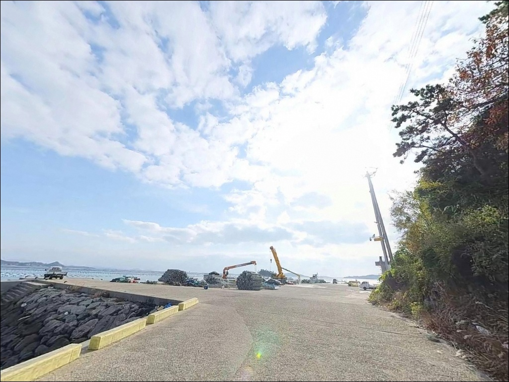
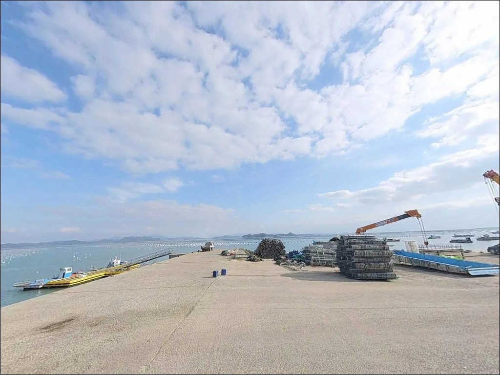
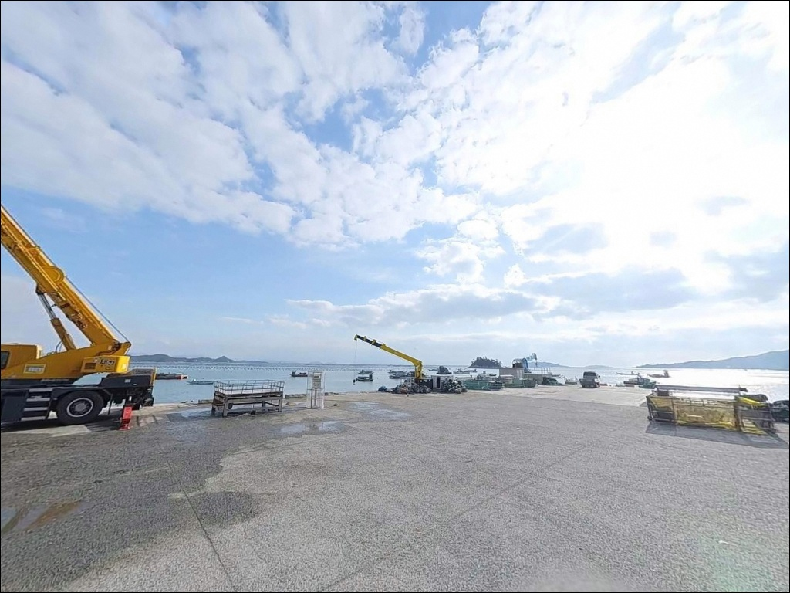
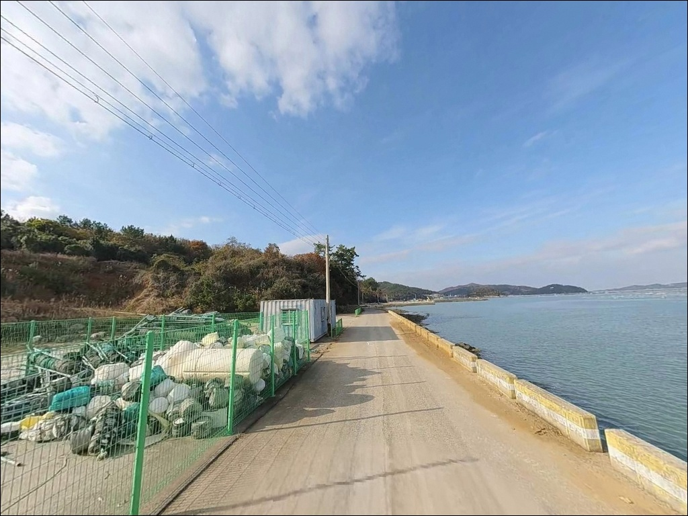

원포리 방파제, 진도 전남 진도군 바다와 가장 가까이 머무는 차박, 낚시 해안 명소


포인트 안내
원포리 방파제
전남 진도군 고군면 원포리 16-4
원포리 방파제는 간조 때 방파제 발밑 수심이
거의 없어지는 구조입니다.
물때를 확인하지 않고 찾아가면
낚시 자리 자체가 사라진 현장을
마주하게 됩니다.
명량수도 영향권에 걸쳐 있는
진도 북부 해안의 특성상
조류가 빠르고 조수간만 차가 큰 편이라,
입장 타이밍을 제대로 잡지 않으면
장거리 이동 후 낚시를 포기해야 하는 상황도
생길 수 있습니다.
이 글은 원포리 방파제에서 낚시 자리가
살아나는 물때 조건과 진입 환경,
어울리는 낚시 스타일을 중심으로 정리했습니다.
조황 단정이나 특정 어종 보장은
이 글의 범위에 포함되지 않습니다.

1. 진입 동선과 포인트 접근성
원포리 방파제는 진도대로(18번 국도)에서
고군면 내 해안 방향 이면도로로 꺾어 들어가는
구조입니다.
면소재지에서 원포리 해안까지는
일반 2차선 지방도로로 연결되어 있으나,
마을 안쪽부터 선착장까지는
폭이 좁아지는 농어촌 포장도로가
이어지는 구간이 포함됩니다.
소형~중형 차량 기준으로는 진입에
큰 어려움이 없는 편이며,
어항 정비사업으로 조성된
물양장 콘크리트 상판(667㎡ 규모)이
선착장 앞에 넓게 깔려 있어
주차와 회차 모두 이 공간을 활용하는
방식이 현실적입니다.
대형 SUV나 장비를 많이 실은 캠핑 차량이라면
출발 전 위성지도로 마을 진입로와
선착장 직전 도로 폭을 미리 확인해 두는 편이
좋습니다.
물양장 내부 공간에서 회차가 가능하더라도
마을 안길이 좁으면 진입 자체가
부담이 될 수 있습니다.

2. 차박 환경 및 야간 체류 여건
원포리 방파제의 차박 환경에서
가장 유리한 조건은 물양장 콘크리트 상판입니다.
넓고 평탄한 바닥에 차를 세운 뒤
바로 낚시 준비를 할 수 있는
캠낚 스타일에 잘 맞는 구조입니다.
차량 옆에서 세팅·식사·낚시를 동시에
진행하기 좋은 포인트입니다.
야간 분위기는 조용한 편이나
민가가 가까운 위치라
소음과 조명 관리가 필요합니다.
가로등이 일부 설치되어 있는 구조로 보이나
충분한 광량을 기대하기 어려우므로
개인 헤드랜턴과 보조 조명은
반드시 지참해야 합니다.
새벽 어선 출항 시간대에는
갑자기 소음과 차량 이동이 늘 수 있어
이 시간대를 미리 감안하는 편이 좋습니다.
차박 허용 여부는 현장 표지판과
최신 지역 정보를 직접 확인해야 합니다.
소규모어항과 어업인회관 부지는
어업 작업이 우선인 공간이므로,
어선 작업 동선을 막지 않는 자리 선정이
기본 전제입니다.


3. 주변 편의시설 및 인프라 현황
원포리 방파제 반경 3km 이내에는
편의점이나 마트를 기대하기 어렵습니다.
공식 확인된 편의시설은 원포리 마을 내
일반음식점 1곳 수준입니다.
완전 자급 체제로 진입하는 것이
현실적인 준비 방식이며,
식수, 얼음, 낚시 소품, 연료 모두
출발 전에 갖춰야 합니다.
반경 10km권으로 범위를 넓히면
고군면 면소재지(오산리) 방향으로
기본 생활 인프라를 기대할 수 있으나,
운영 여부와 거리는 방문 전 직접 확인이
필요합니다.
종합적인 인프라가 필요하다면
진도읍(15~20km 거리)을 기점으로
출발 전 준비를 마쳐 두는 편이 안전합니다.
응급 상황 발생 시 의료기관까지 거리가
상당하므로 기본 비상약품과 충분한 수분,
통신 가능 여부를 미리 점검하는 것이
이 포인트 방문의 기본 준비입니다.

4. 진입 전 반드시 챙겨야 할 준비사항
원포리 방파제 방문 전 가장 먼저 확인할 것은
물때입니다.
간조 때 방파제 발밑 수심이 거의 사라지는 구조라
낚시 가능한 수심을 확보하려면
만조 전후 2시간을 기준으로
입장 시각을 잡아야 합니다.
바다타임에서 진도군 고군면 기준
물때를 미리 확인하고 출발 시간을
역산하는 것이 기본 전략입니다.
명량수도 영향권인 이 해역은 사리물때에
조류가 세집니다.
사리 전후에 원투낚시를 할 경우
봉돌 무게를 평소보다 높여야
채비가 바닥을 잡습니다.
펄바닥 지형 특성상 채비 손실도 있는 편이니
여분 채비를 넉넉히 준비하는 것이
좋습니다.
방파제와 물양장 발판 상태는
현장에서 직접 확인해야 합니다.
소규모 어항 방파제는 난간 없이
끝단이 개방된 경우가 많으므로
구명조끼 착용이 기본입니다.
야간 낚시 시에는 헤드랜턴을 반드시 지참하고,
기상청 파고·풍속 예보를 당일 아침
다시 한번 확인하는 것이 이 포인트에서
포인트 낭비를 막는 조건입니다.

5. 물때에 따라 낚시 자리가 달라지는 지형 구조
원포리 방파제는 소규모어항 물양장과
방파제가 함께 이루는 구조입니다.
내항 쪽은 간조 시 펄(뻘) 바닥이 넓게 드러나며
수심이 거의 없어집니다.
낚시 자리는 만조 전후
수심이 방파제 발밑까지 올라올 때를 기준으로
외항 방향으로 공략하는 구조입니다.
간조 때 찾아가면 갯벌만 확인하고
돌아와야 하는 상황이 생길 수 있습니다.
외항 방향은 명량수도 계열 조류가
흘러드는 방향입니다.
물흐름이 살아있는 시간대에는
원투 채비를 멀리 보내
조류 경계선을 탐색하는 방식이
이 포인트의 기본 공략 패턴입니다.
간조 때 드러나는 갯벌 경계 너머로
수심이 급변하는 구간이 포인트가
될 가능성이 있습니다.
진도 북부 해역 특성상 여름 밤낚시 시즌에는
인근 해역에서 민어·수조기 등의
어종이 원투낚시에 반응한다는
기록이 있는 권역입니다.
민어는 야간에만 반응하는 경향이 강하므로
6~8월 여름 시즌 밤낚시 계획이라면
이 포인트를 목록에 올려볼 만합니다.
출조 전 원포리 방파제 최신 조황을
반드시 검색해 보시기 바랍니다.


6. 포인트에 어울리는 낚시 스타일
이 포인트에서 가장 잘 맞는 방식은
원투낚시입니다.
펄 저질 바닥에 빠른 조류가 더해지는 구간은
붕장어와 도다리를 노리는
원투 채비 운용에 유리한 조건을 갖춥니다.
사리물때에는 무게 있는 봉돌과 굵은 원줄로
채비를 눌러주는 것이 기본이며,
외항 방향으로 최대한 멀리 던진 뒤
입질을 기다리는 패턴입니다.
조금물때처럼 조류가 느슨해지는 구간에서는
찌낚시가 유효합니다.
방파제 코너나 수심이 변화하는 지점을
저부력 찌 채비로 공략하면
감성돔·우럭·노래미 계열을
기대해 볼 수 있는 구조입니다.
봄부터 가을까지 물때에 따라 채비를 바꿔
두 방식을 번갈아 운용하는 전략이
이 포인트에 맞습니다.
라이트 루어도 시도할 수 있습니다.
방파제 석축과 물양장 구조물 주변에서
소형 지그헤드나 웜 채비로
우럭·노래미 계열을 근거리 탐색하는 방식입니다.
내항 얕은 구간보다 외항 석축 경계를
만조 전후에 탐색하는 것이
이 포인트에서 더 현실적인 운용입니다.

7. 대안 포인트와 플랜 B 동선
원포리 방파제 조황이 여의치 않거나
물때가 맞지 않아 낚시 자리가
확보되지 않는 상황이라면
가장 먼저 이동할 곳은
용호방파제(고군면 금계리 7-12)입니다.
길이 300m 수준의 규모 있는 방파제로,
원포리 방파제와 같은 해역을 공유하며
여름철 민어·수조기 원투낚시로
이름이 오르는 포인트입니다.
편의 여건도 원포리보다 나은 편입니다.
벌포항 방파제도 같은 고군면
동해안 라인의 대안입니다.
지방어항으로 지정된 규모 있는 항구로,
항내와 외항 양쪽 공략이 가능해
바람·파도 방향에 따른 자리 선택이
유연한 편입니다.
원포리 방파제에서 1~2km 거리에는
전장포 방파제와 인근 갯바위가
있습니다.
같은 해역 조류를 공유하는 포인트라
원포리에서 여건이 맞지 않을 때
빠르게 이동해 탐색할 수 있는
첫 번째 가까운 대안입니다.

물때 하나 제대로 잡으면
원포리는 다른 포인트가 됩니다
원투낚시를 즐기거나 여름 밤낚시를
계획 중인 낚시인이라면
원포리 방파제의 지형 조건은
잘 맞는 구조입니다.
인터넷에 정보가 많지 않은
로컬형 포인트라는 점도
사람 붐비는 유명 포인트를 피하고 싶은
낚시인에게 오히려 장점이 됩니다.
반면 편의시설이 없는 완전 자급형 진입,
물때를 놓쳤을 때 발생하는 헛걸음,
민가 근접에 따른 야간 소음 관리까지
사전에 감안하지 않으면
불편함이 크게 느껴질 수 있는 포인트입니다.
물때 확인, 자급 준비, 대형 차량 진입로 사전 확인,
이 세 가지를 갖추고 간다면
조용하고 한적한 진도 북부 방파제를
제대로 경험할 수 있습니다.
물양장 콘크리트 바닥에 차를 세우고
조류가 올라오는 만조 전후를
기다리며 원투 채비를 멀리 보내는
방식이 이 포인트의 기본 그림입니다.
낚시와 차박을 함께 즐기려는 분이라면
이 구조가 잘 맞을 것입니다.